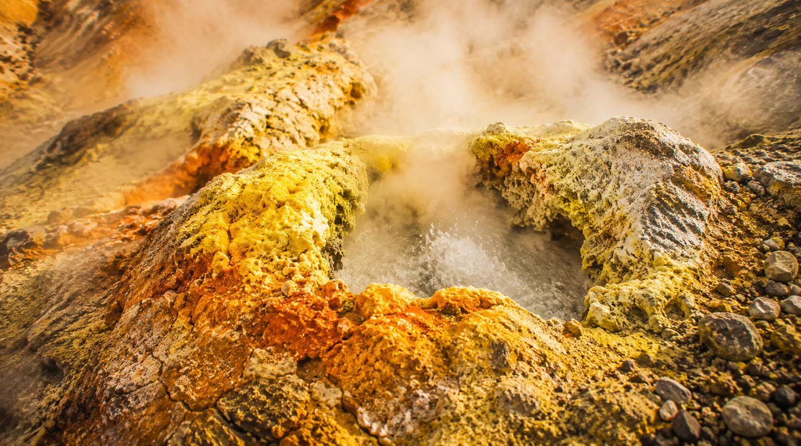
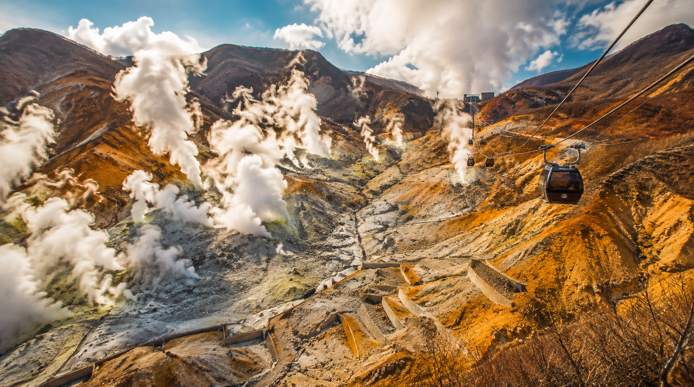
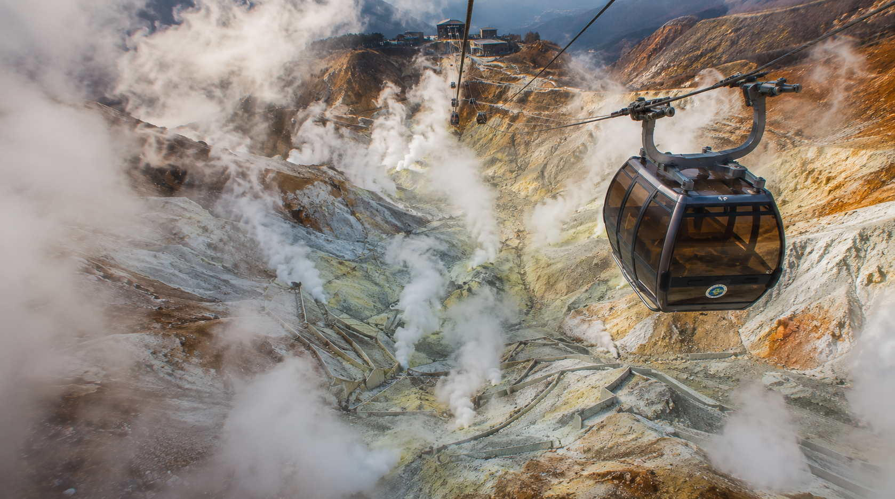

From a Sleeping Water Dragon to a Breathing Fire Dragon: Owakudani
From quiet blue depths to a mountain that breathes fire
by Sari
Hi hi! Okay, okay, did you already talk to Kiri-neechan? Did she show you the hell mountain one?? I KNEW you'd come find me next, come here, come here, I have to show you something!
So wait — first, close your eyes for a second. Remember the last poster we showed you? The blue one? Ryusendo, the cave with that huge still lake way down underground, so quiet you could practically feel a water dragon sleeping in it? Kiri-neechan got all soft and dreamy talking about it, remember?
Okay. Now open your eyes. Because THIS is what happens right after that.
Wait, Everything Just... Changed?
Isn't that WILD?? One second we're in this quiet blue underwater world, and the next — boom! — the ground itself is huffing and puffing white steam everywhere! This place is called Owakudani, and it's basically the earth breathing right out in the open where you can watch it happen!
Kiri-neechan already told you the old, spooky history part, right — the "gate to hell" stuff? Okay good, because I want to tell you the part that gets ME excited: this whole mountain is ALIVE. Like, actually, right-now, still-happening alive.

From sleeping blue depths to a mountain breathing in the open.
A Fire Dragon, Right Under Our Paws
Here's the thing that made my whiskers go all tingly. Remember how Ryusendo has a water dragon sleeping way down in the dark? Well, Owakudani has its own dragon too — except this one's made of fire. It's called magma, and it's rumbling around right underneath everything, and honestly? We are walking on its BACK. Right now. While it sleeps. Sort of. Mostly.
Water dragon, quiet and blue and calm. Fire dragon, loud and orange and definitely still awake enough to make the ground steam. See why I couldn't stop thinking about this one??

The fire dragon stirs beneath the sulfur-crusted earth.
The Scary-Good Part
Okay so, real talk — I got a LITTLE nervous about this one. You ride a cable car right over the crater and just... look straight down into it?? My tail was doing that puffy scared-cat thing the whole ride, not gonna lie. And it turns out when the volcanic gas gets too strong, they actually close the area off completely — like, this isn't just a "pretty view," it's an actual, currently-active volcano that people still have to watch carefully. That part gave me a little shiver.
But also?? That's exactly why it's amazing. It's not a picture of something that used to happen a long time ago. It's happening right now, today, while we're standing there. That's a completely different kind of feeling than a quiet cave, and I kind of love that we get to show you both.

A gondola above the crater — beautiful, thrilling, and very much alive.
Cold and still, versus hot and restless. A dragon asleep, versus a dragon breathing. Put these two posters up together and honestly? I think you'd feel it every time you looked at the wall — like two totally different sides of the same big, wild country.
If you haven't read Kiri-neechan's post yet, go! Go read it, she got all the good spooky history parts about Jizo statues and stuff. I just wanted you to feel the ENERGY of this place first. That's my job. 😼